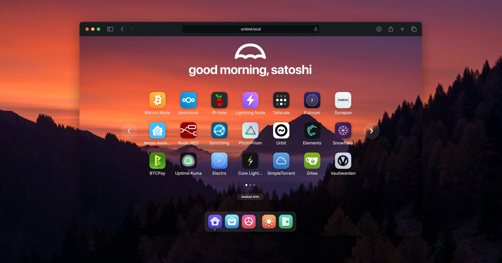

Bitcoin & Finans
- Bitcoin Node
- Electrs
- Mempool
- BTCPay Server

Umbrel tarzı ana sayfa ile CasaOS/YAML ve ZimaOS ağ kontrolünü birleştirir.
NumbrelOs
Umbrel’in sade landing sayfasını Numbrel için yeniden yarattık. CasaOS tarzı YAML kurulum ve ZimaOS benzeri ağ kontrol demo panelleriyle hepsi bir arada.
NumbrelOs, Ubuntu Server, Docker ve Node.js üzerinde çalışacak şekilde hazırlanmış bir prototip olarak sunuluyor.
cd /workspaces/NumbrelOs
npm install
npm startSonra tarayıcıda http://localhost:3000 adresini açın.
docker compose up --buildDocker Compose ile NumbrelOs’u kolayca çalıştırabilirsiniz.
Umbrel gibi bir app market konsepti. Aşağıdaki kategoriler NumbrelOs’ta desteklenebilecek uygulama türlerini gösterir.
Bu bölüm, CasaOS tarzı YAML kurulum panelini ve ZimaOS benzeri ağ kontrol deneyimini gösterir.
NumbrelOs, Umbrel’in ana sayfa deneyimini Numbrel olarak sunar; CasaOS’un YAML kurulumunu ve ZimaOS’un ağ yönetimini hedefler.
Minimal, uygulama odaklı ana sayfa tasarımı.
Hizmetleri YAML ile tanımlama fikri.
IP ve DNS ayarlarını yönetmek için hazırlık.
Ubuntu Server üzerinde Docker tabanlı kullanım desteği.
NumbrelOs’u geliştirmek için katkılarınızı bekliyoruz. Mevcut prototip, daha gerçek bir ev sunucusu deneyimi için başlangıç noktasıdır.
Bu repo NumbrelOs prototipi olarak sunulur. Kendi projelerinizde kaynak olarak kullanabilirsiniz.